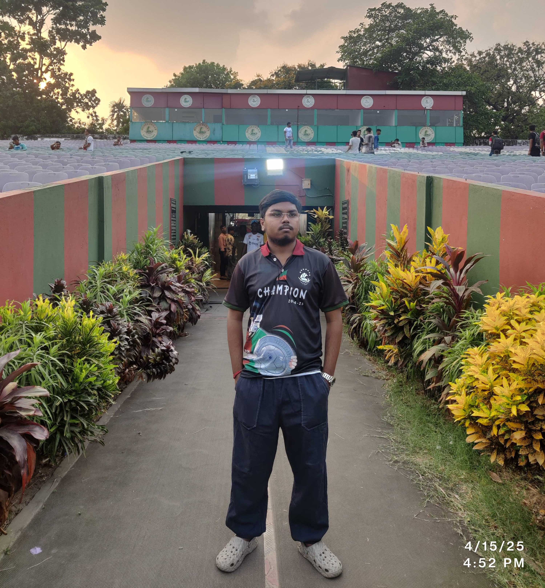

About Us
Bengal PES Federation is the ultimate destination for passionate eFootball players. We bring together players from all over India to compete, improve, and celebrate the world of PES (Pro Evolution Soccer).
Our mission is to build a strong and competitive eFootball community in India through tournaments, rankings, and team development. Whether you're a casual gamer or a serious competitor, BPF is your home.
Our Team
Our team consists of dedicated individuals who are passionate about eFootball and committed to promoting the sport in India. From organizing tournaments to managing rankings, we work tirelessly to ensure a vibrant and engaging community.
Meet Our Admins
BUDDHADEV JANA
PRESIDENT, BPF
Hello! I'm BUDDHADEV JANA, a PES gamer and the Current President of the Bengal Pes Federation. I Joined this Federation to unite PES lovers in Bengal, building a space to compete, connect, and grow with quality of tournaments.
AKASH SARKAR (BATMAN)
CORE ADMIN, BPF

আমরা প্রতেকে মোটামুটি যারা পেস খেলি তারা ফুটবল ভালোবাসি!! তাই পেস গেমটা যখন প্লে স্টোর এ এল তখন থেকেই আমাদের মনে কৌতূহল জাগল!! যেহেতু ফুটবল প্রিয় বাঙালি তাই আর কী!! তো সেখান থেকে তৈরী হল পেস গ্ৰুপ, নিজেদের মধ্যে ফ্রেন্ডলি খেলা!! যেহেতু আমরা ফুটবল ভালোবাসি তাই আমাদের দেশের ফুটবল কাঠামোর মত আমরাও বানালাম ভারচুয়াল গেমিং ক্লাবস্ নিজেদের নিজেদের!! তারপর টুর্নামেন্ট!! এমন করে করেই এগিয়ে যাওয়া!! তো এই টুর্নামেন্ট গুলোতে যাতে কোনো বিঘ্ন না ঘটে যাতে সুষ্ঠুভাবে চলে!! সব ক্লাব নিজেদের মধ্যে ভ্রাতৃত্ববোধ বজায় রাখে, সেইজন্যই বানানো আমাদের বেঙ্গল পেস ফেডারেশন। যাতে টুর্নামেন্ট খেলতে কোনো অসুবিধা না হয় প্লেয়ারদের!! যাতে আরো আকর্ষণীয় করা যায় আর কী!!
এই গেমের পাগলামো শুধু এইখানে সীমাবদ্ধ নেই, ছড়িয়ে পড়েছে মালয়েশিয়া, ইন্দোনেশিয়া, ভিয়েতনাম, বাংলাদেশ ও আরও অন্যান্য দেশে, তো সেখানো ফুটবল প্রিয় বাঙালি পিছিয়ে থাকবে কেন বলো তো? আমরাও দেখিয়ে দেবো তাদের যে আমরাও কম নই!! বেঙ্গল পেস কমিউনিটি কী সেটা সারা বিশ্বের সামনে তুলে ধরবো!! তবে হ্যাঁ ওই যে কোনো কাজই একলা সম্ভব না, আসো আমরা সবাই একসাথে মিলে এগিয়ে যাই!! হিংসে করে হবে তা কী শুনি? দিনশেষে আমরা সাধারণ মানুষে তাই একটি গেমের জন্য নিজেদের মধ্যে শত্রুতা করে কোনো লাভ আছে কী?
যাইহোক আপনাদের সবার সমর্থনে আমার ঠিক এগোবো, নিশ্চয়ই এগোবো ✊
AKASH SARKAR (SHINCHAN)
CORE ADMIN, BPF
Hello! I'm Akash Sarkar (Shinchan), a passionate PES gamer and the founder & Main Admin of the Bengal Pes Federation. I created this federation for the Efootball players Bengal, Because When BPF Created there was a shortage of a federation as small clubs can't get ay chances and also there was a lack of quality in our bengal efootbal community. So Batman & I discussed about it and plan to create this federation with Rajat & Arnab. Then we show the revolution in bengal efootball community. We just completed our two seasons with quality and also we are planning to make it more better in future. Now we are not only representing bengal but also we are representing India in efootball community. We are the only federation in India which is registered in IFOC and have connection with other International Federations. We have the Indian National efootball Team & more. Join us in this journey to make efootball more better in India. #believe_in_bpf.
PRATYUSH
CORE ADMIN, BPF
My love for efootball (formerly known as PES) goes long back in time in 2012-'13 when I used to play the game in Computer. Like many others I started to play the game in mobile from 2019-20 and is hooked and passionate about it since then. Since childhood I showed keen interest in sports which reflected in my gaming interests as well. I played the game in just a personal interest and curiosity, playing friendlies with my school friend once in a while. Now in due course of time, I learnt about crews, learnt about auction tournaments and gradually became a part of the large Efootball community that India (and also in the global spectrum) has developed! I am stunned and astonished by the hardwork and dedication of all the fellow crewmates and captains show towards their teams. I warmly welcome and congratulate all the teams who have agreed to come together to develop a strong, unionised fraternity in the name of "Bengal Pes Federation" which would develop and increase the bondings we possess among each other and I, as a fellow member of the working committee and admin panel of the federation promise myself and all the fellow members to be honest, impartial, sporting and unconditional towards the growth development of the Federation to watch it flourish and provide a strong database and message towards the Esports community of India. That happens to be my utmost incentive and of course towards our ultimate love; football.
PRITAM PATTANAYAK
CORE ADMIN, BPF
KONAMI has renamed its popular football franchise->pro evolution Soccer (PES) to eFootbal. Events are the part of the game, but to make the game more exciting, we the gamers play tournaments organized by several communities, crew, etc. To make the gamers aware of these tournaments organized within the nation ,we the hardcore gamers framed a federation i.e BENGAL PES FEDERATION . In a nutshell this federation is a sum of several eFootbal communities, groups, crews. If anyone doubts what will be the future of this federation,as there are several federation and council who are doing the same. As an admin my reply will be to have faith and BELIEVE IN BPF. we have several departments maintained by different admins who are well experienced and are master's to manage this departments. We dream to merge every single crew,group, community within this federation and looking forward to build the biggest federation of this nation.